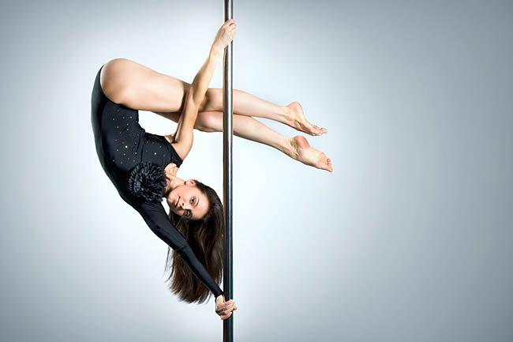

El pole dance fusiona gracia y fuerza en una expresión artística y deportiva. Esta disciplina combina acrobacias y baile alrededor de una barra vertical, promoviendo la fuerza, flexibilidad y confianza personal de quienes lo practican.
BENEFICIOS
La práctica de pole dance ofrece beneficios significativos para la autoestima al fortalecer el cuerpo, mejorar la confianza en la apariencia física y fomentar la expresión personal. La adquisición de habilidades técnicas y la superación de desafíos contribuyen a una mayor autoaceptación y empoderamiento, generando un impacto positivo en la autoestima.
El pole dance es una forma efectiva de fortalecimiento físico al requerir el uso integral de grupos musculares. Las acrobacias y movimientos demandan fuerza en brazos, piernas y abdomen, mejorando la resistencia, tonificación muscular y flexibilidad, brindando un entrenamiento completo que contribuye al desarrollo físico y la salud.
El pole dance es un poderoso impulsor de la flexibilidad, ya que implica movimientos que estiran y elongan los músculos de todo el cuerpo. La práctica regular promueve una mayor amplitud de movimiento, mejora la elasticidad y fomenta la agilidad, contribuyendo a una mayor flexibilidad general.